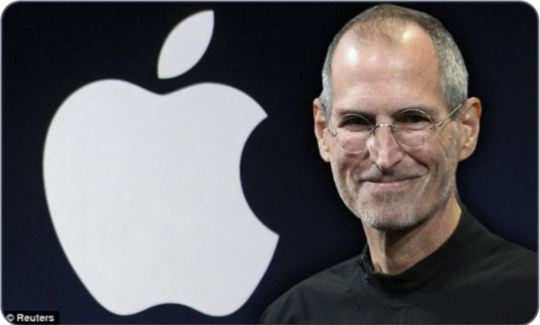
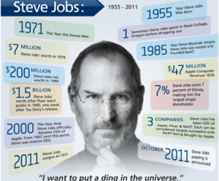

Six months after Job's death, the author of his best-selling biography
identifies the practices that
every CEO can try to emulate.
by Walter Isaacson

His saga is the entrepreneurial
creation myth writ large:
Steve Jobs cofounded Apple in his parents' garage in 1976, was ousted in 1985, returned to
rescue it from near bankruptcy in 1997, and by the time he died, in October 2011, had built it into the
world's most valuable company. Along the way he helped to transform seven industries: personal
computing, animated movies, music,phones, tablet computing, retail stores, and digital publishing. He
thus belongs in the pantheon ofAmerica's great innovators, along with Thomas Edison, Henry Ford, and
Walt Disney. None of these men wasa saint, but long after their personalities are forgotten, history
will remember how they applied imagination to technology and business.
"The people who are crazy enough to think they can change the world are the ones who do "
-Apple's "Think Different" commercial, 1997
One of the last times I saw him, after I had finished writing most of the book, I asked him again
about his tendency to be rough on people. "Look at the results," he replied. "These are all smart
people I work with, and any of them could get a top job at another place if they were truly feeling
brutalized. But they don't." Then he paused for a few moments and said, almost wistfully, "And we
got some amazing things done." Indeed, he and Apple had had a string of hits over the past dozen
years that was greater than that of any other innovative company in modern times: iMac, iPod, iPod
nano, iTunes Store, Apple Stores, MacBook, iPhone, iPad, App Store, OS X Lion-not to mention every
Pixar film. And as he battled his final illness, Jobs was surrounded by an intensely loyal cadre of
colleagues who had been inspired by him for years and a very loving wife, sister, and four children.

M
Walter Isaacson, the CEO of the Aspen Institute, is the
author of Steve Jobs and of biographies of Henry Kissinger, Benjamin Franklin, and Albert Einstein.